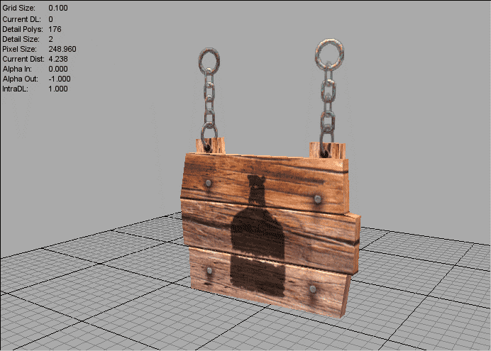

|
If you've ever tried to export a shape with transparency, chances are you've run into z sorting issues; polygons in the back of a scene rendering in front of polygons that are in the front of the scene. While these problems can be terrifically frustrating, there are simple steps you can follow to fix existing issues and precautions you can take in order to avoid future issues. |
How the zBuffer Works
|
In order to better deal with any sorting problems you may be having, its beneficial to understand what causes them in the first place. The z buffer is where everything starts. The basic idea behind z buffering is simple: If the pixel thats being rendered is the closest pixel thats been rendered so far, then go ahead and render it. If its not the closest, don't render it. To better explain, here is an illustration.
In this simple scene we have two objects: a red pyramid and a green sphere. The z buffer works from the front of the scene to the back, so in this case it would start with the green sphere. It would look at each pixel of the sphere and ask "Is this pixel of the sphere behind any pixels of any other shapes I already rendered?" The sphere is in the very front of the scene, so no other objects would have been rendered in front of it. This means that as the z buffer is checking each pixel of it, the answer to "is this behind something I already rendered?" is constantly "no". The end result is the entirety of the green sphere being rendered. When the Zbuffer checks the pyramid, it eventually hit the the lower section where the sphere overlaps.
It will ask as it always does, "is this behind something I already rendered?" to which the answer will be "yes, its behind the green sphere". When the answer is yes, the zbuffer doesnt render that pixel. Thus, the pyramid pixels that are behind the sphere aren't rendered and a proper sense of depth is created. Transparent and translucent objects can't follow this formula, though, because it would lead to major visual problems. Let's say a third object is added to the scene; a flat plane. The plane is textured with a texture that has no RGB values, only full alpha. In the image, the outline marks where the plane is.
This is where human logic and computer logic begin to butt heads. Human logic says that the plane is made invisible by its transparent texture, and therefore we should be able to see through it. Computer logic says that the plane is a polygon that needs to be rendered. Moreover, its in the foreground, so it needs to be rendered in front of the stuff in the background. Just like how the parts of the pyramid that are behind the sphere aren't rendered, anything behind the plane wont be rendered as well. The end result would be a big square area of dead space. To avoid this situation, transparent objects are added to the scene after all non-translucent objects are. While this fixes the major problem of having giant blocks of empty space being drawn into the scene, it opens the door for z sorting issues. |
What Causes Z Sorting Issues
|
Every dts shape you create, from a simple cube to a complex, multi-mesh character, has a hierarchy. Sometimes this heirarchy is obvious. If you're making a character, for instance, you can open a hierarchy viewer in your modeling application and see that the pelvis gives way to a couple sections spine, which gives way to the neck and shoulders. The hierarchy of a shape can get a little more ambiguous with multi-mesh objects that have been attached together to form a single object. Take, for example, this shape. A red checkerboard that intersects a green checkerboard. Not the best looking art in the world, but hey, it illustrates the point. It consists of two intersecting planes that have a double-sided transparent texture applied to them. If we export this and load it into ShowToolPro, we'll get an obviously bad sort.
While understanding the reason for this can be confusing at first, its actually relatively simple to figure out if you know what the engine is doing behind the scenes. Torque displays a transparent shape based on its heirarchy. Much like it renders a scene back to front, it displays the meshes in a transparent shapes in an specific order; from the top to the bottom of the objects hierarchy. Because these shapes aren't being rendered based on distance from the player/camera, it means parts of the shape in the background can get drawn over parts in the foreground if the hierarchy is set up as such. The first impulse for many would be to say "It may be sweet ass sweet, but that doesn't change the fact that the checkerboard object doens't have a heirarchy. After all, its a single shape and a hierarchy implies theres more than one". If you're thinking this, consider yourself misinformed. The checkerboard shape is made of two objects that have been attached together. One of those objects is at the top of an internal heirarchy. Whichever object is at the bottom of the hierarchy will be rendered in front of the object thats on top in the hierarchy. To illustrate how this works, lets look at the +3 checkboards of transparency again. In 3ds max, if I select the green plane and attach it to the red plane, it will make the red plane at the bottom of the internal hierarchy. When we export, the red plane will always be drawn in front of the green plane.
If we attach the red plane to the green plane, the green will be drawn in front of the red.
Of course, neither of these options are acceptable in most cases. The bottom line is that this kind of error is distracting to both a developers and players. There are solid, proven ways of fixing many of these issues, and in some cases, completely avoiding them. |

How to Fix Z Sorting Issues
|
There are several construction techniques that will allow you to end up with a properly sorting shape. The first is everyones favorite love/hate command; "SORT::". Using SORT:: With simple shapes such as the checkerboard, SORT:: works great. When we add SORT:: to the shape name (SORT::checkerboard2) and export it, it displays perfectly from any angle. It's important to be aware of, though, what sort actually does. The checkerboard in its original form was two planes with a 2-sided texture applied to them. When we export it without sort, we get an 8 poly shape. The math is simple. We start out with two planes, which are divided in half to make triangles. This comes to 4 polys. Because we have a 2-sided texture applied to them they get mirrored so as to properly display the texture on both sides, which brings the polycount to 8. When we use SORT::, the polycount jumps to 36. This is because the exporter cuts up and duplicates planes so they can be rendered correctly in game. What was normally a 8 poly shape is now four times larger. Let's say that you are using a more complex shape. The more sub-meshes you have, the more cuts and duplicated planes it needs to create to allow for the proper SORT::. Consider it fair warning: Only use SORT:: on simple objects. Thats not to say that complex shapes are doomed to render incorrectly. There are ways to use SORT:: intelligently and also methods that don't involve sort at all, which we'll get to in a little bit. First, though, are some different SORT commands. Extended SORT Options These commands are put into the "User Defined" field in 3ds max, which is found by right clicking on a shape, choosing "properties", and clicking on the User Defined tab. The first is SORT::MAX_DEPTH. SORT::MAX_DEPTH limits the number of plane tests (the process where the exporter figures out how to slice an object) the exporter performs. To put it in simple terms, it tells the exporter how hard to try to get a correct sort. This is a useful command to use with more complex objects. Sometimes with such objects, the exporter will keep slicing and slicing, until you are left with an shape whose polycount is far too high and filesize is far too big. MAX_DEPTH puts a limit to how many slices the exporter makes. If more than than MAX_DEPTH tests are required, it simply outputs the remaining polys in the best order it can, with no guarantee that they will be sorted correctly. SORT::Z_LAYER_UP and SORT::Z_LAYER_DOWN are both typically used for trees and tree-like objects. Z_LAYER_UP works best with shapes that are made of cones that point down (ferns and palm tree, for instance), and Z_LAYER_DOWN works best with shapes made of cones that point up (pine trees). HIERARCHAL LINKING Heirarchical linking is a good way to have objects render properly without increasing the polycount. Just like how shapes that have been attached to each other will be displayed based on a internal heirarchy, Torque will display objects in an exterior heirarchy bottom to top. Proper use of this method can best be shown with the example of a plant. Here is bush from Pocketwatch Game's Wildlife Tycoon: Venture Africa!. Its composed of three meshes: hileaves, midleaves, and loleaves.
The hierarchy of the shape is set up like this: hileaves --> midleaves --> loleaves In game, the engine wil draw hileaves first, then midleaves, then loleaves. This places everything in its correct visual place. When setting up your own shapes, generally, your most interior mesh should be at the top of the hierarchy, and your most exterior mesh should be at the bottom. Its useful to point out that at certain angles this shape technically wont be rendering properly. Corners of polys in the back will be rendered in front of foreground polys. This is an issue that can be neglected, and therein lies an important lesson. Many sorting issues don't matter, as they will never be seen by players. Unless they are doing research to make their own models, most players wont spend time studying environmental art. Developement time should be spent making a fun game, not tweaking details that wont be noticed. If your shape is sorting mostly correctly, go on to the next task; don't allow yourself to get hung up with minor problems. Hierarchal linking is also useful (and in most cases, necesary) when used with SORT:: objects. Imagine you have made a tree composed of two meshes; a trunk (which isnt transparent) and a simple 2 plane leaf mesh (similar to our simple checkerboard example from before). If these objects arent placed in a hierarchy, chances are they won't render properly in game. To correct this, youd make the leaves a child of the trunk. The trunk would be drawn first, followed by the leaves; the shape would look correct. CHANGING YOUR MATERIALS How you set up your materials can also have an effect on the sort order of a shape. Take this sign for example, which is composed of two parts; the wood (non-transparent) and the chains (transparent).  It's important to note how the materials are set up. Let's start by looking at the texture.
The chain (which uses transparency) and the wood (which is opaque) are painted in the same file. When you're applying this texture to the model, however, you need to create two seperate materials. In the image below, the left half shows the wood material, while the right half shows the chain material. Notice the Opacity (Transparency) field has a file loaded only in the chain material.
If you use one material, you'll end up with a bad sort. This is because by using one material, you are saying that the entire object is transparent. By using 2 materials, you can apply the one with transparency to only the chain meshes, allowing the wood to remain opaque. |